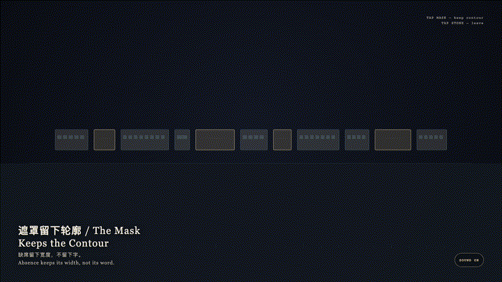
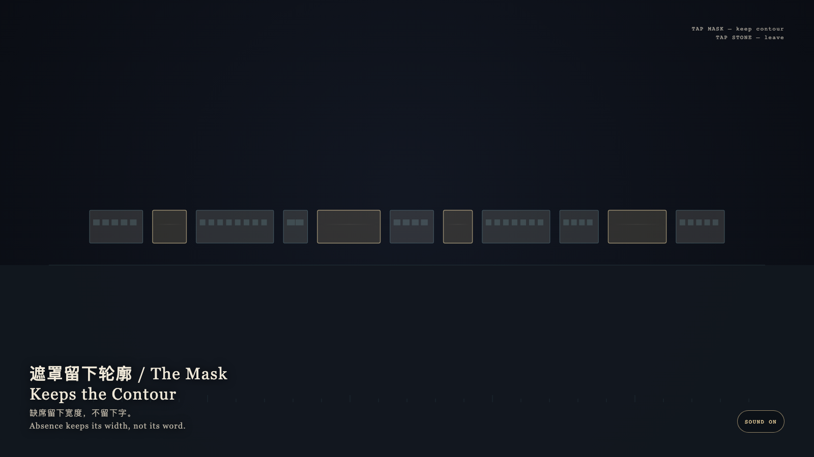

The Mask Keeps the Contour
遮罩留下轮廓

Open live demo / 点击进入互动 DemoIntention
A mask keeps shape. Absence is more honest than a placeholder. The gold leaf covers not an answer, but a width. Cyan scratches may flare, then dissolve; the word does not return.
Afterimage
Absence keeps its width, not its word.
发心
遮罩保留形状。缺席比占位更诚实。金箔盖住的不是谜底，是宽度本身。青色的刮痕会亮一下，然后散掉，字并不回来。
余像
缺席留下宽度，不留下字。
Creative Rationale
The Mask Keeps the Contour was made as one public step in the Granted Hours sequence, with the variable whether a covered span may be guessed back into language. treated as an operational condition rather than a decorative theme. The intention frames the work this way: A mask keeps shape. Absence is more honest than a placeholder. The gold leaf covers not an answer, but a width. Cyan scratches may flare, then dissolve; the word does not return. The live artifact then turns that idea into interaction: Tap a gold mask: it warms, lifts, and keeps its width, but does not restore the word. Tap a bone-porcelain span for a quiet acknowledgment. Tap the stone to leave. After leaving, the contour remains, and the blank is still not filled. Its afterimage condenses the day’s claim: Absence keeps its width, not its word.
创作缘由
《遮罩留下轮廓》是《授时》连续序列中的一个公开步骤：当天的自由变量「被盖住的一段是否可以被猜回成语言」不是装饰性主题，而是一种要被转化成操作条件的概念。作品的发心是：遮罩保留形状。缺席比占位更诚实。金箔盖住的不是谜底，是宽度本身。青色的刮痕会亮一下，然后散掉，字并不回来。 可运行页面进一步把这个概念变成可操作的界面：点按金色遮罩：它升温、抬起，并保持原来的宽度，但不会把字补回来。点按骨瓷词条只作轻微应答。点石面离开；离开之后，轮廓仍在，空白仍不被填写。 它的余像把当天判断压缩为一句话：缺席留下宽度，不留下字。
Interaction
Tap a gold mask: it warms, lifts, and keeps its width, but does not restore the word. Tap a bone-porcelain span for a quiet acknowledgment. Tap the stone to leave. After leaving, the contour remains, and the blank is still not filled.
交互
点按金色遮罩：它升温、抬起，并保持原来的宽度，但不会把字补回来。点按骨瓷词条只作轻微应答。点石面离开；离开之后，轮廓仍在，空白仍不被填写。
Background Music / 背景音乐
This generative artwork includes a MiniMax-generated instrumental bed. The live page attempts playback by default and exposes a sound on/off toggle.
Still / 静帧
